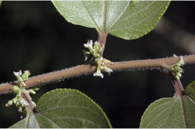
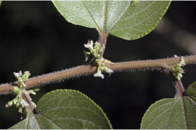
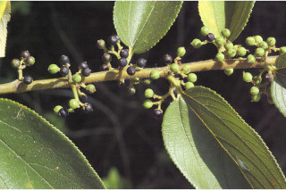
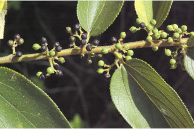

Tamil: Mini, Mena, Amparuthi, Amathalai, Yerralai, Ambarathi, Mudalei Malayalam: Aamathali, Aarni, Amapotti, Amarathi, Ami, Javanthi, Malantotali,Omamaram, Pottama, Pottamaram, Ratthi, Thundinaru English Kannada Malayalam Tamil Botanical descriptions Ecology Distribution Literature Botanical descriptions : Habit : Trees up to 5 m tall. Trunk\bark : Bark brownish, with corky lenticels ; blaze reddish with white streaks. Branchlets : Young branchlets terete , grey pubescent . Leaves : Leaves simple , alternate , distichous ; stipules lateral , pubescent , caducous and leaving scar ; petiole up to 0.5-1 (4.5) cm long, canaliculate above, pubescent ; lamina 3.5-7.5 x 2.5-5 cm, ovate to lanceolate , apex acuminate , base asymmetric and subcordate , margin serrate , scabrid , canescent beneath; 3-5-nerved at base; midrib canaliculate above; secondary_nerves ca. 4 pairs; tertiary_nerves distantly horizontally percurrent . Flowers : Flowers unisexual , dioecious , in axillary fascicles or cymes ; sessile . Fruit& seed : Drupe , globose , 0.4 cm long, black when ripe; seed one. Ecology : Along margin of evergreen forests up to 1800 m. Distribution : Tropical Africa, Asia and Australia; in the Western_Ghats- throughout. Literature : Blume, Mus. Bot. Lugd.-Bat. 2: 62. 1856; Gamble, Fl. Madras 3: 1350. 1998 (re. ed); Sasidharan, Biodiversity documentation for Kerala- Flowering Plants, part 6: 436. 2004; Saldanha, Fl. Karnataka 1: 108.1984; Cook, Fl. Bombay 2: 631.1908. Top of the Page
Celtis orientalis L.


 

 
